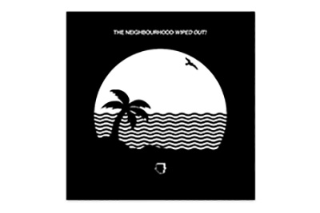

About the Band
Formed in Los Angeles in 2011, the band centers around lead singer Jesse James Rutherford, guitarists Jeremy Freedman and Zach Abels, bassist Michael Margott, and drummer Brandon Fried. In 2012, the Neighbourhood released the EP I'm Sorry..., featuring such singles as "Sweater Weather" and "Female Robbery." The songs gained considerable attention online and helped build interest in the group. By 2013, "Sweater Weather" had topped the Billboard Alternative chart and solidified the group's buzzworthy status.I Love You Two more EPs followed in 2013, leading up to the release of their full-length debut I Love You. Buoyed by the continued interest in "Sweater Weather," as well as the single "Afraid," the album peaked at number 25 on the Billboard 200 and number five on the Top Alternative Albums chart. The following year, the group's long-delayed mixtape album, #000000 & #FFFFFF, appeared as a free download online. Included on the album was the single "icanteven," featuring French Montana
Albums
The Neighbourhood (sometimes rendered as "THE NBHD") is an American rock band formed in Newbury Park, California, in 2011. The band is composed of vocalist Jesse Rutherford, guitarists Jeremy Freedman and Zach Abels, bassist Mikey Margott, and drummer Brandon Alexander Fried. After releasing two EPs, I'm Sorry... and Thank You, The Neighbourhood released its first full-length album I Love You. on April 23, 2013, via Columbia Records.[1] The same year, the EP "The Love Collection" was released; and in November 2014, a mixtape titled #000000 & #FFFFFF. A second album, Wiped Out! was released in October 30, 2015. In March 9, 2018 a self-titled third studio album came out, preceded by the release of two EPs: Hard on September 22, 2017, which briefly charted on the Billboard 200, and To Imagine on January 12, 2018. After the release of the album, the tracks from the extended plays not included on the final tracklisting were collected in another EP, "Hard to Imagine". In 2015, the Neighbourhood returned with their sophomore full-length album, the Justyn Pilbrow-produced Wiped Out! The album peaked at number one on Billboard's Top Alternative Albums chart and spawned several singles, including "R.I.P. 2 My Youth," "The Beach," and "Daddy Issues." The Hard EP followed in September 2017 and cracked the Billboard 200 as a surprise release.